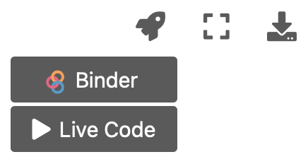

How to read this book
Contents
How to read this book#
Practical data
Download the images used in the practical exercises here.
Each chapter in this book starts with a main section that describes one or more key concepts in bioimage analysis. This is intended for all readers. Working through these sections should be enough to become familiar with the main ideas of the book.
However, actually doing bioimage analysis requires software. And the same concepts can surface in different software in different ways.
For that reason, all the chapters in Part 1 each contain two extra subsections:
ImageJ: This describes how the concepts relate to the popular bioimage analysis software, ImageJ, including the Fiji distribution.
Python: This shows the concepts through code in the Python language, using tools like NumPy, SciPy and scikit-image.
ImageJ sections continue to feature in Part 2, but Python is dropped because the whole book is written using Python code anyway. So once you have the main ideas, any time you want to see some Python code you can just press the Click to show buttons found next to almost every figure.
This means that you can read the book in different ways:
As an ImageJ primer, skipping all the bits that involve looking at Python code
As a Python-for-image-analysis manual, skipping all the ImageJ-specific sections
As a conceptual overview, just reading the main chapters and skipping anything specific involving ImageJ and Python
As a full introduction to image analysis, ImageJ and Python, skipping nothing
Tip
My advice is to read the book focussing on the concepts and ImageJ first, to get a fairly quick overview of everything – without worrying too much about Python.
You can always return to work through the Python sections later. However, be warned that the Python code is intended for people who already reasonably comfortable with programming, so if the language is entirely new to you then you might want to work through an introductory Python course first.
Interactivity#
It is strongly recommended to not only read the text, but also to put what you read into practice by exploring and experimenting.
This handbook is designed to be interactive in two main ways:
Questions & practicals #
Various questions and practical exercises are scattered throughout the text. To make the most of these, please follow the instructions below.
When you see a question, try to come up with your own answer first.
Then, if you want to compare your answer with mine, click on the Answer tab.
Good! This is my answer.
Live Jupyter notebooks #
{kind=link}
This text exists as Jupyter notebooks – which can be made interactive with the help of Binder.
You can activate a ‘Live’ version by clicking on the rocket icon on the top right, and choosing Binder or Live code.
It will take a bit of time to start up Binder, but once it’s ready you should see that the page is divided into different sections, called ‘cells’.
Some of these cells contain explanations (like this one), and some contain code. You can run each cell by clicking inside it and either a) clicking the Run button in the live toolbar, or b) pressing Shift + Enter.
This is how the Python sections should be used. With live Jupyter notebooks, you can run all the code yourself interactively. This includes making changes to the code within cells, and exploring how these changes impact the output.
But this isn’t restricted only to the Python sections, because the figures in the main text are generated using Python code as well. This means you can use the Click to show buttons, like the one below, to see exactly how the figure was made – and even modify the figures in a live notebook.
"""
Show an example figure.
If you can read this, you've found the code!
"""
fig = create_figure(figsize=(8, 8))
im = load_image('sunny_cell.tif')
# Ensure the image is 8-bit with sensible contrast
im = im.astype(np.float32)
im = im - np.percentile(im, 1)
im = im / np.percentile(im, 99) * 255
im = np.clip(im, 0, 255)
im = im.astype(np.uint8)
# Show the main image
show_image(im, title='Original image', pos=121)
# Show the inverted image
show_image(255 - im, title='Inverted image', pos=122)
glue_fig("fig_reading", fig)
Fig. 2 An example figure.#